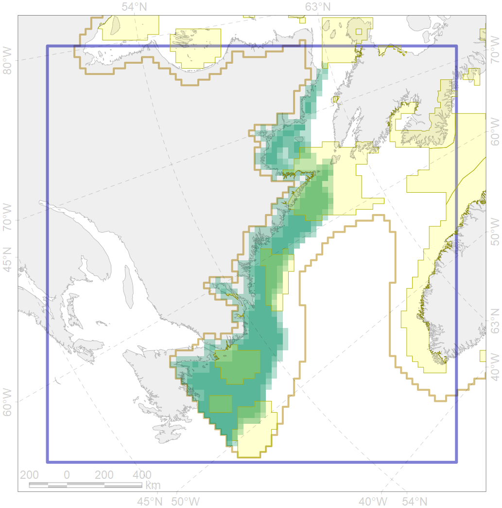
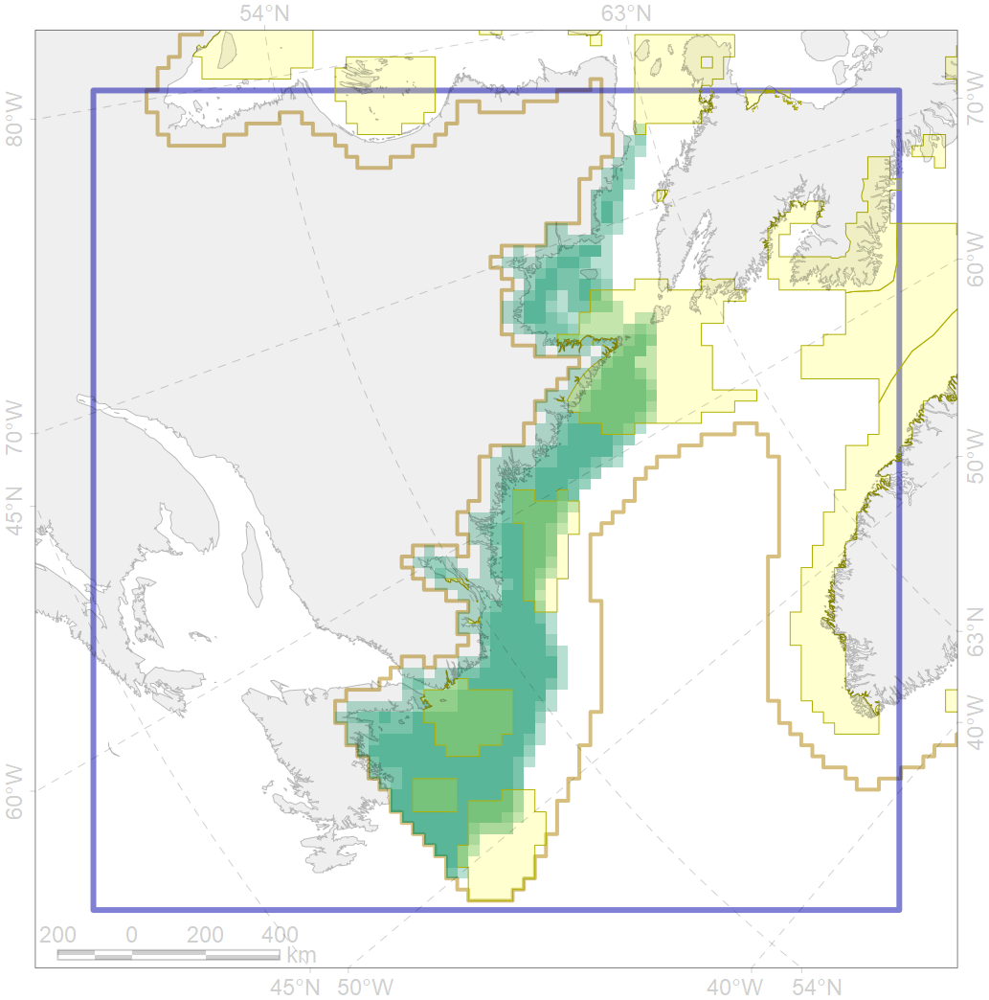

7145
 

| CF code | 7145 |
| CF name | III.2.1.4. Ungava -Labradoran shelf |
| Time Period | At least last 100 years |
| Source(s) | Harris et al., 2014; Carmack, Wassmann, 2006 |
| Seasonality | 1-12 |
| Depth Horizon | Sea floor |
| Methodology | Data obtained from the literature |
| Use Restrictions | Open access |
| Author Name | V. Spiridonov, W. Merritt |
| Notes | |
| Scenario’s Target | 0.04610408 |
| Target Achievement | 0.343 (Scenario: 743.7%) |
| PAC | Share of the Total Amount within the PAC | Share of the Target Achievement for the ArcNet | PAC’s Contribution to the Target Achievement |
|---|---|---|---|
| 73 | 0.0% | 0.0% | 0.0% |
| 76 | 11.4%12.1% | 223.1%230.5% | 30.0%31.0% |
| 77 | 6.5% | 119.4% | 16.1% |
| 78 | 0.0%0.2% | 0.7%2.7% | 0.1%0.4% |
| 79 | 9.3%9.9% | 165.5%166.4% | 22.3%22.4% |
| 80 | 2.7%3.4% | 49.5%54.3% | 6.7%7.3% |
| 81 | 3.3%3.8% | 47.9%51.5% | 6.4%6.9% |
| inner | 33.3%35.8% | 606.3%624.9% | 81.5%84.0% |
| outer | 66.7%69.2% | 137.4%164.4% | 18.5%22.1% |
| † supplement values are for area consistence whereas principal values are for Accenter compatible gridded stats |